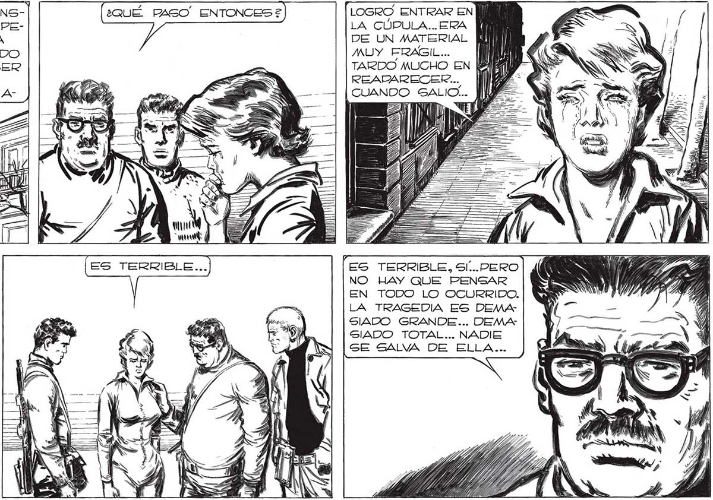

LOS VIMOS CONSTRUIR LO QUE PEDRO LLAMO” LA y | “BASE ”... CUANDO EL CREYO SABER DE LO QUE SE ¿QUÉ MAS VIO, SEÑO-: RITA? LES VI ENTRAR A LA CÚPULA UN TECLADO ENORME, COMPLICADISIMO.... ES LOS TRAJERON UNOS GERES PARECIDOS . A NOSOTROS... == y => / J ¡ESTABA CONVERTIDO EN ROBOT |! PERO CON UNAS MANOS ENORMES DE MUCHOS DEDOS... SS ¿QUÉ PASO” ENTONCES 2 EAS No uasía Ra ZON YA PARA DUDAR: ELLA, POR EL AZAR DE LAS CIRCUNSTANCIAS, HABIA PODIDO PRESENCIAR LA LLEGADA De LA CABEZA DIRECTIVA DE LA INVASION. SORPRENDI LA MIRADA E FRANCO. LOGRO ENTRAR EN LA CÚPULA... ERA DE UN MATERIAL MUY FRAGIL... le TARDO MUCHO EN la READARECER... | CUANDO SALIO.. ES TERRIBLE, 9l...PERO NO HAY QUE PENSAR EN TODO LO OCURRIDO. LA TRAGEDIA ES DEMASIADO GRANDE... DEMA4 SIADO TOTAL... NADIE SE SALVA DE ELLA... VI TAMBIÉN UNOS ANIMALES ENORMES Argus z az NS Franco NO LA ESCUCHABA: SUS OJOS SE DEMORABAN EN EL DIBUJO DE LA FRENTE,EN LA CURVA...
